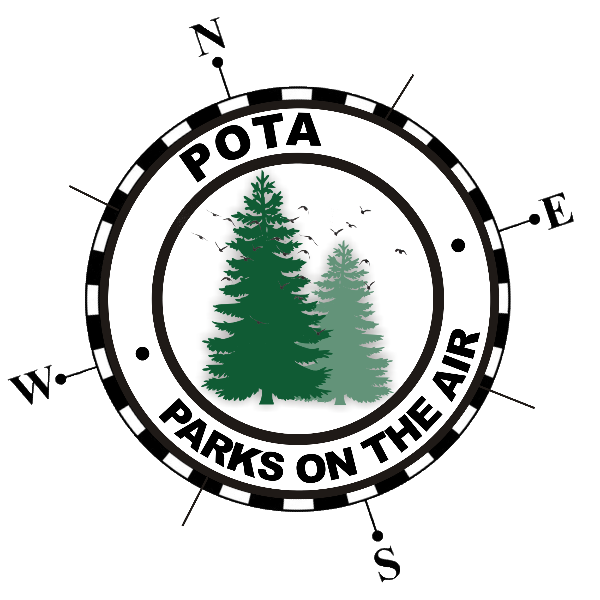

Next club meeting is April 11 at 7PM
Back to StoriesStory 779
Thu, 2024-03-28 13:50 — VE7FSR
Next Meeting Apr 11.png

The next monthly meeting will be held on Thursday April 11 at 7PM .
Parks on the Air Presentation We will have a guest speaker, Michael Van Kuyk VE7KPZ , from Vernon presenting on Parks On The Air .
For more information on Parks On The Air see the attachments below.
We are working on hosting a spring picnic and POTA activation, so this will be a great primer for everyone in the club.
Mike has agreed to share his POTA presentation in PDF, and it may be downloaded at this link .
Attachment Size Jan QST POTA.pdf 3.51 MB Cold War POTA.pdf 3.63 MB POTA article.pdf 207.99 KB 2024-03-07 KARC Meeting Minutes.pdf 164.16 KB KARC Monthly Meeting Agenda April 2024.pdf 113.39 KB meshtastic_update.pdf 64.21 KB